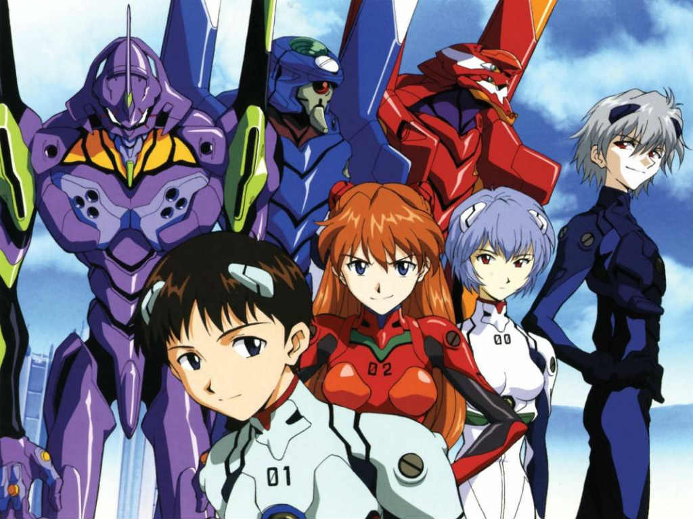
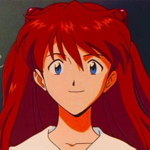
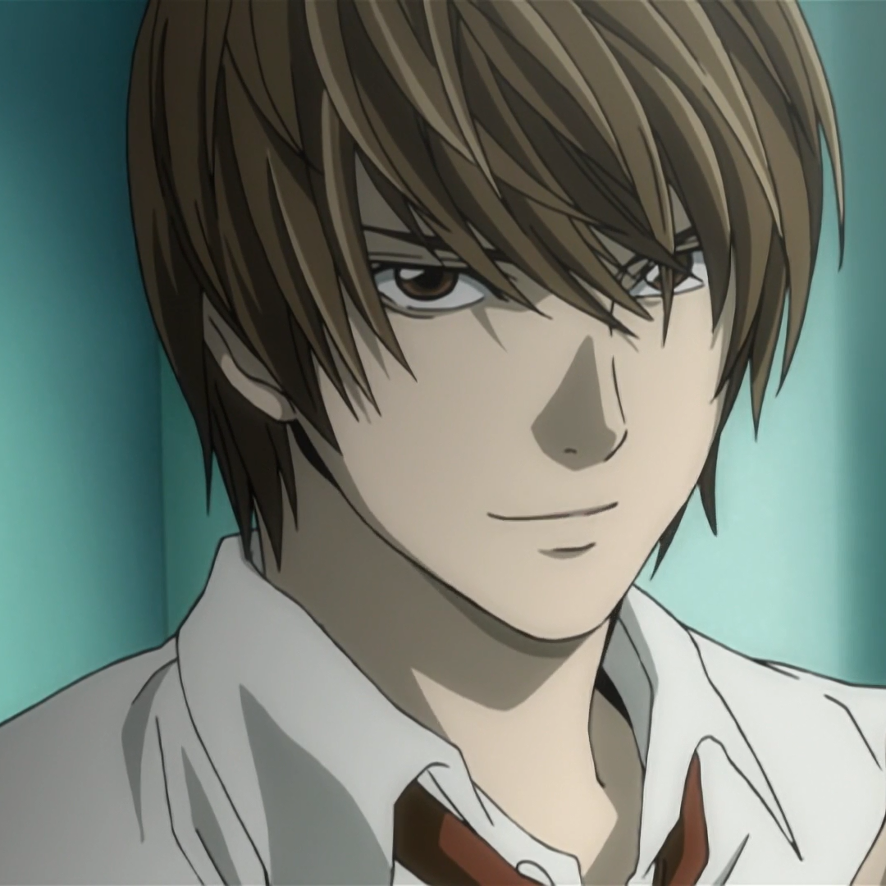
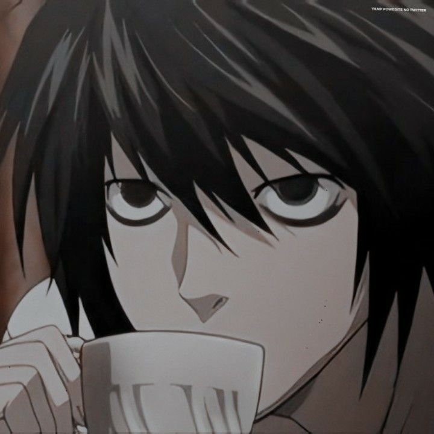

Evangelion
Neon Genesis Evangelion (新世紀エヴァンゲリオン Shin Seiki Evangerion?), also known simply as Evangelion, or Eva, is an anime series created by the Gainax studio and directed by Hideaki Anno. The story takes place in a futuristic world in which a paramilitary organisation called NERV protects humanity from attacks by beings of unknown origin and nature, the "Angels", using humanoid bio-mechas called Evangelion (shortened to EVA). As the plot progresses, it gradually becomes more confusing and psychological, where the characters' personalities become increasingly unstable and their development becomes pivotal. Hideaki Anno, the director and screenwriter, has said that the development of the series was inspired by his own experience, whereby the characters show a wide range of their emotional afflictions and personalities.
Asuka Langley
Asuka Langley Sohryu (惣流・アスカ・ラングレー[?],"Sōryū Asuka Rangurē") is a 14-year-old fictional character from the Neon Genesis Evangelion franchise and one of the main female characters. Asuka is designated as the Second Child ("Second Children" in the original Japanese versions) of the Evangelion Project and pilots the Evangelion Unit-02. Her surname is romanized as Soryu in the English manga and Sohryu in the English version of the TV series, the English version of the anime movie.
Rei ayanami

Rei Ayanami (綾波 レイ[?], "Ayanami Rei") is a fictional character from the Neon Genesis Evangelion franchise. She is the First Child, (referred as the First Children in the Japanese version), the pilot of Evangelion Unit-00 and one of the central characters.
At the beginning of the series, little is known about Rei and her stoic personality puzzles her peers. As the series progresses, her personality evolves and she becomes more involved with the people around her.
Shinji Ikari

Shinji Ikari (碇シンジ[?], "Ikari Shinji")[1] is the Third Child, the main protagonist of the series and the designated pilot of Evangelion Unit-01. He is the son of Gehirn bioengineer Yui Ikari and NERV Commander (formerly Chief of Gehirn) Gendo Ikari. After his mother's death, he was abandoned by his father and lived for 11 years with his sensei, until he was summoned to Tokyo-3 to pilot Unit-01 against the Angels. He lives initially just with Misato Katsuragi; they are later joined by Asuka Langley Soryu.
Death Note

Death Note (stylized as DEATH NOTE ) is a Japanese manga series written by Tsugumi Ohba and illustrated by Takeshi Obata. The story follows Light Yagami, a teenage genius who discovers a mysterious notebook: the "Death Note", which belonged to Shinigami Ryuk, and grants the user the supernatural ability to kill anyone whose name is written in its pages. The series focuses on Light's subsequent attempts to use the Death Note to carry out a worldwide massacre of people he considers immoral and to create a crime-free society, using the alias of a divine vigilante named "Kira", and the subsequent efforts of an elite Japanese police task force, led by the enigmatic Detective L, to stop him. Death Note was published in Shueisha's Weekly Shōnen Jump manga magazine from December 2003 to May 2006. Its 108 chapters were collected in 12 tankōbon volumes.

Misa Amane

Misa Amane (弥 海砂, Amane Misa) is an up-and-coming model and supporter of Kira who eventually becomes the Second Kira. After gaining a Death Note, she seeks out Kira in order to thank him for killing the man who murdered her family and to offer him her help. Having made the trade for the Shinigami Eyes, Misa learns that the identity of Kira is Light Yagami.
Misa is a short, slender, attractive young woman with long, straight, golden-blonde hair, most commonly styled with a portion of her hair in pigtails tied with red bands, but occasionally worn loose as well. In the anime, it seems that she was a brunette at one point.
Light Yagami

SLight Yagami (夜神月, Yagami Raito) is the main protagonist of the Death Note series. After discovering the Death Note, he decides to use it to rid the world of criminals. His killings are eventually labelled by the people living in Japan as the work of "Kira."
Light is a young man, standing at above average height with light-brown hair and brown eyes. During Part I, when not wearing his school uniform, which consists of a tan suit and red tie, he dresses fairly casually, sometimes sporting a dress shirt underneath a jacket or a V-neck sweater with a collared t-shirt underneath. During Part II, if not wearing a similar style of clothes, he is seen wearing a suit.
L

L「エル Eru? whose real name is L Lawliet 「エル＝ローライト Eru Rōraito?」is the mysterious detective who takes on the mission to catch Kira. Although his face and name are initially unknown, he eventually introduces himself to other characters throughout the series, revealing his strange personality and becoming one of the main characters of the series.
L ("Elle" in the Italian version), is considered to be the best detective in the world, thanks to the fact that in the past he managed to solve the most complicated cases that no one else could, for example the serial killer BB as well as preventing the world from entering World War III.
Black Clover
Black Clover 「ブラッククローバー Burakku Kurōbā」 is a Japanese manga series written and illustrated by Yūki Tabata. The series began serialization on February 16, 2015, on Weekly Shōnen Jump's 12th issue. The story focuses on fantasy, adventure and comedy genres while maintaining the "Young Boys" 「少年 Shōnen」 demography.
Asta and Yuno are orphans raised in the outskirts of the Clover Kingdom. In a world where people are born with magic, Asta was born without any. In contrast, Yuno was born a prodigy with above average magic power and the talent to control it. Additionally, in their coming of age ceremony, Yuno receives a rare four-leaf clover grimoire, like the original Magic Emperor. On the other hand, Asta received a tattered grimoire where a Devil lies within, a five-leaf clover grimoire.
Misa Amane
Misa Amane (弥 海砂, Amane Misa) is an up-and-coming model and supporter of Kira who eventually becomes the Second Kira. After gaining a Death Note, she seeks out Kira in order to thank him for killing the man who murdered her family and to offer him her help. Having made the trade for the Shinigami Eyes, Misa learns that the identity of Kira is Light Yagami.
Misa is a short, slender, attractive young woman with long, straight, golden-blonde hair, most commonly styled with a portion of her hair in pigtails tied with red bands, but occasionally worn loose as well. In the anime, it seems that she was a brunette at one point.
Light Yagami
SLight Yagami (夜神月, Yagami Raito) is the main protagonist of the Death Note series. After discovering the Death Note, he decides to use it to rid the world of criminals. His killings are eventually labelled by the people living in Japan as the work of "Kira."
Light is a young man, standing at above average height with light-brown hair and brown eyes. During Part I, when not wearing his school uniform, which consists of a tan suit and red tie, he dresses fairly casually, sometimes sporting a dress shirt underneath a jacket or a V-neck sweater with a collared t-shirt underneath. During Part II, if not wearing a similar style of clothes, he is seen wearing a suit.
L
L「エル Eru? whose real name is L Lawliet 「エル＝ローライト Eru Rōraito?」is the mysterious detective who takes on the mission to catch Kira. Although his face and name are initially unknown, he eventually introduces himself to other characters throughout the series, revealing his strange personality and becoming one of the main characters of the series.
L ("Elle" in the Italian version), is considered to be the best detective in the world, thanks to the fact that in the past he managed to solve the most complicated cases that no one else could, for example the serial killer BB as well as preventing the world from entering World War III.